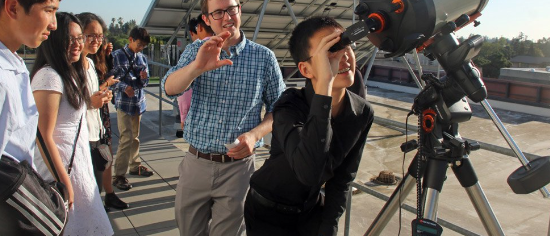
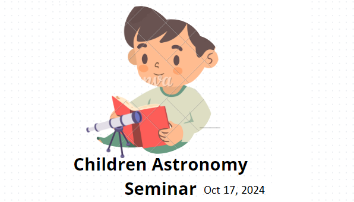

Welcome to the Royal Astronomical Society of Canada
Welcome to the Royal Astronomical Society of Canada (RASC)! We are a non-governmental, charitable institution dedicated to fostering a love for space and astronomy. Our passion for the cosmos drives us to share the wonders of the universe with people of all ages, especially young students, whom we inspire through educational seminars and engaging activities.


We believe in the future of education
The future of astronomy education lies in the hands of today's youth. At RASC, we are dedicated to providing the resources and support needed to inspire and empower the next generation. Together, we can explore the wonders of the universe and unlock the mysteries of the cosmos.